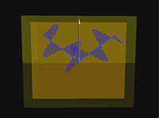

QuickTime movies of the Reflection/Refraction TOP module
Note: Click on the thumbnails to see the 640x480 resolution movies.
|
Unpolarized light incident from air onto glass at Brewster's angle. Note the random behavior of the incident electric field, e.g., the white vector, and the linear polarization of the reflected electric field. Click here to see the 320x200 version |
|
|
Unpolarized light incident from air onto glass at a glancing angle of incidence. Note that the incident and reflected electric fields are behaving randomly. Click here to see the 320x200 version |
|

|
Linearly polarized light polarized perpendicular to the plane of incidence incident from air onto glass. The angle of incidence is 85 degrees. Note the pi phase change upon reflection. |
|
Linearly polarized light polarized parallel to the plane of incidence incident from air onto glass. The angle of incidence is initially 40 degrees, and is then changed to 76 degrees. In the former case there is no phase change upon reflection and in the latter case there is a pi phase change upon reflection. Click here to see the 320x200 version |
|

|
Linearly polarized light polarized perpendicular to the plane of incidence incident from glass onto air. The angle of incidence is initially the critical angle, is then changed to 58 degrees, and is then changed to 89 degrees. In the first case there is no phase change upon reflection, in the second case there is a pi/2 phase change, and in the third case there is a pi phase change upon reflection. The evanescent waves in the air are not being pictured. |
|
Linearly polarized light polarized parallel to the plane of incidence incident from glass onto air. The angle of incidence is initially 21 degrees, and is then changed to 42 degrees. In the first case there is a pi phase change upon reflection, and in the second there is no phase change uopn reflection. The evanescent waves in the air are not being pictured. Click here to see the 320x200 version |
|
|  |
Linearly polarized light polarized parallel to the plane of incidence incident from glass onto air. The angle of incidence is initially 47 degrees, and is then changed to 89 degrees. In the first case there is a pi/2 phase change upon reflection, and in the second there is a pi phase change upon reflection. The evanescent waves in the air are not being pictured. Click here to see the 320x200 version |

Created
by Srihari Angaluri and Kiril Vidimce
Send comments to comments@webtop.org